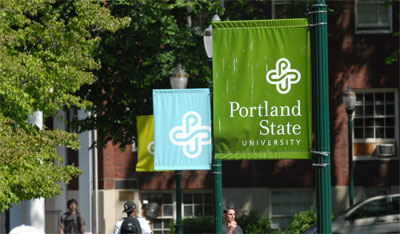
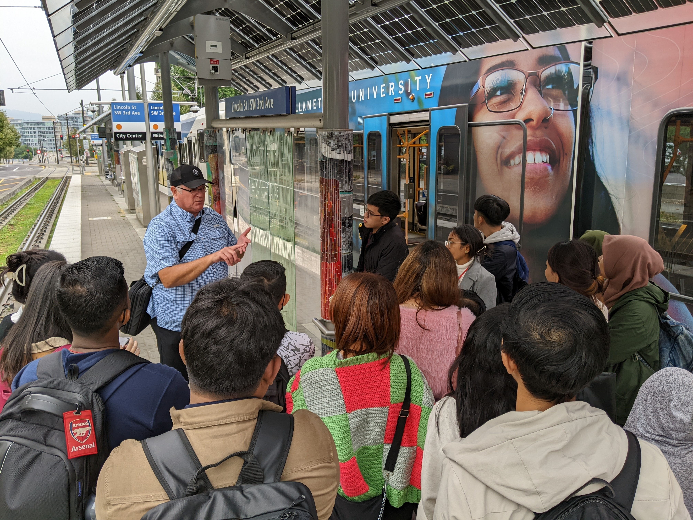
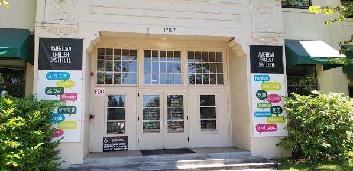
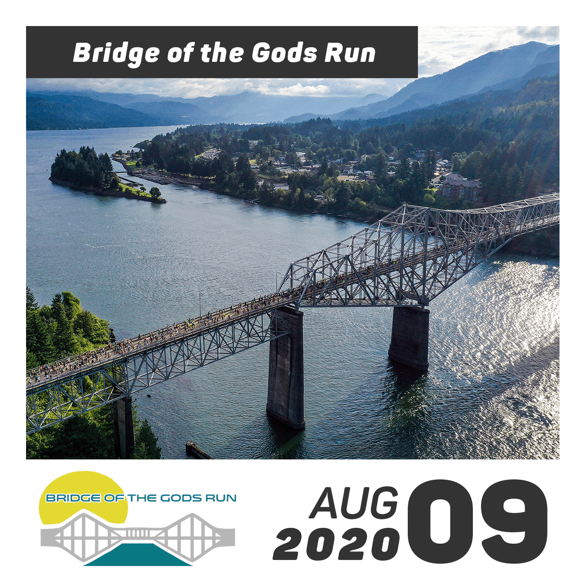
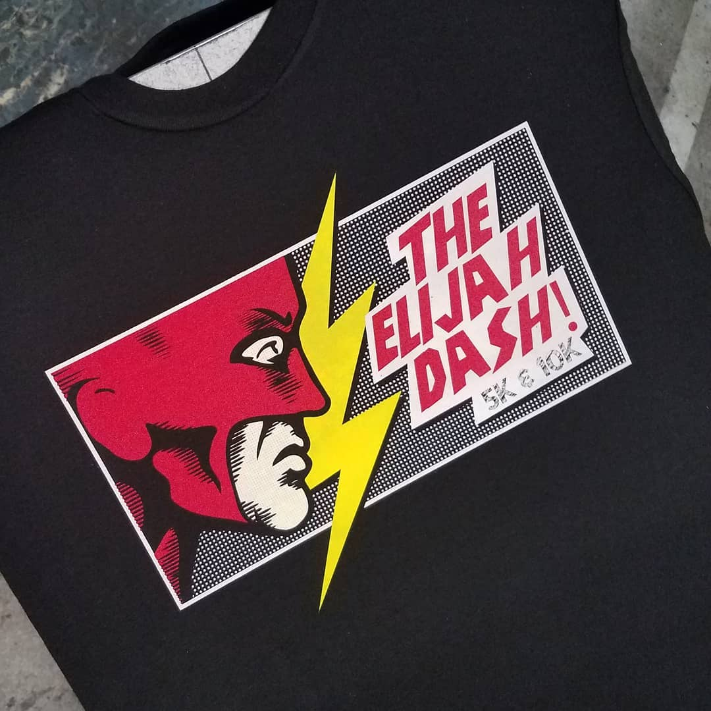

Projects
These projects showcase a selection of my work. While my primary focus is on managing and enhancing international educational programs, it's important to note that my extensive background includes over eight years as a marketing manager. Skills in content creation and digital design are among the tools I leverage to support my expertise in international program management. These media skills are particularly valuable in enhancing program recruitment, managing social media campaigns, and promoting university programs to a global audience.
Executive MPA
Graduate Programs Manager
Directed Portland State University's Executive MPA program (EMPA), designed for professionals seeking career advancement through practical learning opportunities. I managed and coordinated the program, ensuring it provided applicable experiences that directly enhanced participants' professional trajectories.
SEE MORE
YSEALI
International Program Coordination
Helped with facilitating the creation of Portland State University's partnership with the Federal Government to host the Young Southeast Asian Leaders Initiative (YSEALI) program. Worked with local organizations to help create additional resources for program participants to find value and success in their studies.
SEE MORE
American English Institute
Marketing / Promotion
My position at AEI covered event coordination, social media management, content creation, promotional material design, tutoring, classroom aide and tech support along with being the direct line between students, faculty and their partnered programs.
SEE MORE
Breakaway Promotions
Marketing Manager
Graphics, Content Creation, Outreach Coordination, Sponsor/Public Relations, Press, Copywriting, Publicity and Marketing for over a dozen different annual events as well as hiring and management for our media team staff.
SEE MORE
Sea to Summit
Event Promoter
Worked at Montbell in Japan, creating promotional content for their Sea to Summit event series. This role involved developing marketing strategies to enhance event visibility and engagement across various Japanese locations, providing experience in cross-cultural promotion and international event marketing.
SEE MORE
International Programs
Cultural Ambassador
The participation, arrangement and development of several Japanese related international groups and programs. Programs from schools such as University of Oregon's AEI, INTO Oregon State University, Tokyo International University (TIUA) as well as coordinated several cultural clubs, language circles, and international meetups.
SEE MORE
Japanese YouTube Series
Host / Content Creation
Youtube series which taught both culture and language to English speakers and Japanese speakers. The videos featured travel advice, guides, and the occasional comedy skit/game.
SEE MORE
Graphics & Logos
Graphic Design
Uncategorized graphics, logos, and various digital content with no specific connection to anything related to my previous work samples.
SEE MORE
Elijah Dash
Graphic Design / Marketing Coordinator
Put together a last minute fundraising event for a coworker's family whose son was diagnosed with a brain tumor. Helped with graphics, social media, outreach, sponsorships and event coordination.
SEE MORE
Product Advantage
Logo Design
Logo creation and branding for a new auto detailing company based in Oregon. Graphics, Calendars, Product Advertisements, Banners, Signs and more.
SEE MORE
Beer & Wine Festivals
Logo Design
Various ads, graphics and logos put together for beer and wine festivals within the area.
SEE MORE